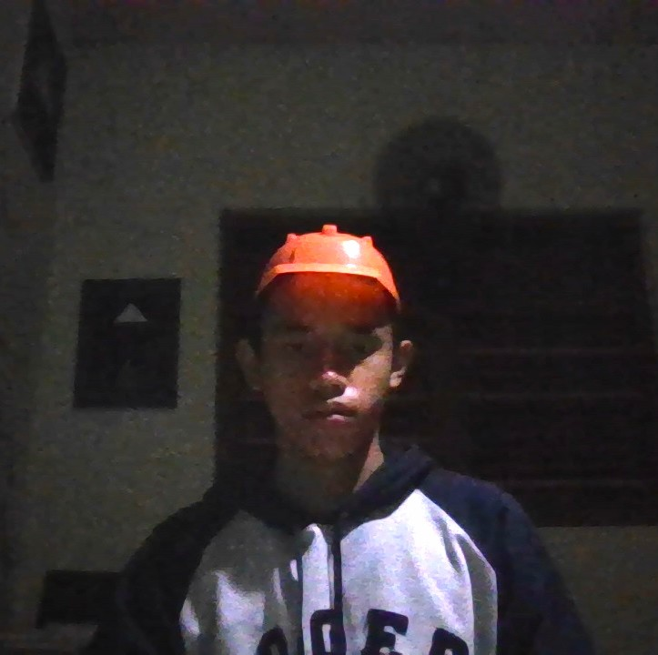

Halo, Saya Bagas!
Siswa kelas X SMKS Brantas Karangkates, sebagai Calon Junior Web Developer di Kelas Industri UBIG.
Lihat Proyek SayaTentang Saya
Saya tinggal di Malang, tepatnya di Negara Republik Indonesia, Provinsi Jawa Timur, Kabupaten.Malang, Kecamatan.Sumberpucung, Desa Karangkates, Saya senang mencoba hal baru di dunia teknologi. Apalagi Coding, Yang saya tahu tentang coding sebelum mempelajarinya secara langsung adalah tampilan text baris-berbaris dalam jumlah banyak, Saya sekolah di SMKS Brantas Karangkates, dan memilih Jurusan PPLG Sebagai main saya, Saya Umur 15 dan Main goal saya kali ini adalah, Mencapai Cita-Cita saya sebagai Wirausahawan dan menjadi Professional Programmer dan menguasai Full-Stack Developer, Saya mungkin setelah mengetahui kalau coding dapat menunjukkan hasil yang bagus jika prosedurnya akurat dan tidak terjadi perbedaan atau salah kata, dengan begini saya punya IDE, ketika saya mencapai cita-cita saya, Saya akan menjadi wirausahawan yang memiliki browser Digital sebagai Sumber utama saya ketika berjualan.
Hobi
- Bersepeda
- Menikmati Hidup
- Bermain Game
- Berperan
- Akting
- Membantu Teman
- Jalan-Jalan Keluar
Cita-cita
Menjadi Seorang Wirausahawan. Sembari menguasai dan menjadi professional Full-Stack Developer. Langkah yang saya rencanakan:
- Menuntaskan Kelas Industri UBIG sampai Semester 4
- Magang di perusahaan teknologi
- Bekerja sebagai Web Developer
Keahlian
- HTML dasar (Tahap mendalami Materi)
- Mengetik cepat (Miss-type)
- Desain poster dengan Canva
- Berpikir Kritis dalam kondisi tertentu
- Ahli sebagai penjaga waktu dalam peran kelompok
- Memahami cara Operating System Bekerja
- Mampu Mengkoordinasi Kelompok
Jadwal Belajar
| Hari | Waktu | Kegiatan | Tindakan |
|---|---|---|---|
| Selasa | 18.00 - 19.00 | Observasi Modul | Analisis modul, Memahami isi, dan Mencari Poin Penting. |
| Jumat | 13.00 - 13.30 (Shift 1) | Mengikuti Prosedur Standar UBIG | Membuat tugas proyek, Memahami fungsi setiap baris code, Serta melihat hasil output setelah dilakukan input code. |
| Jumat | 18.00 - 19.00 (Shift 2) | Melanjutkan Proyek | Review hasil output dari code, Analisis bagian yang kurang akurat, Mencari dan perbaiki kesalahan. |
| Sabtu | 18.00 - 19.00 | Merekam video dan menulis laporan | Merekam video presentasi dan menjelaskan aspek-aspek penting yang ada dalam modul dan menunjukkan hasilnya, Dan melaporkan ke telegram Industri UBIG. |